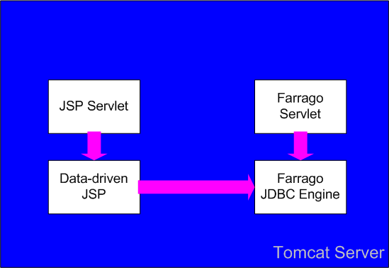
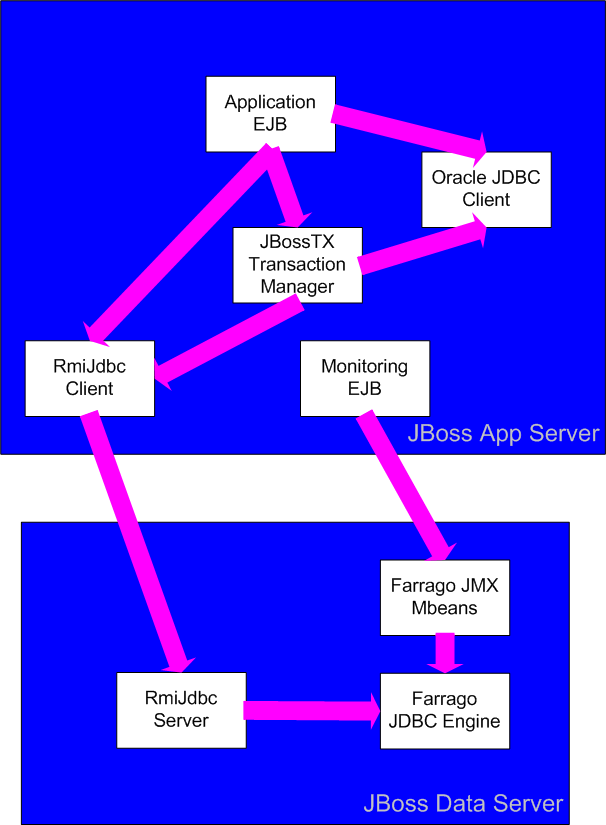

Philosophy
Conceptually, an RDBMS is an unusual combination of two systems with
very different natures. The low level system is a computation- and
data-intensive kernel in which scalability, performance, and
reliability are the key factors. The high level system is simply an
application server in which the data model defines relational objects,
and the "business logic" is SQL parsing, optimization, execution, and
extensibility. Most DBMS implementations fail to recognize this dual
nature and have serious implementation flaws as a result. Heavyweight
commercial systems treat the entire server as a kernel, which makes
development of higher level logic unnecessarily difficult as it is
bound by constraints only suitable for the lower level system.
Lightweight systems (e.g. most Java databases) go to the opposite
extreme, focusing on simplicity rather than performance, which
necessarily limits their applicability. One objective of the Farrago
project is to demonstrate that it's possible to have it all without
creating something too monstrous. Another is to build up a modular
framework so that other projects can use Farrago as a base for
more specialized SQL engines.
Technology
Today's best application server technology is Java-based, and Java
support for extensibility through language features such as reflection
is excellent, so high-level Farrago components are developed in Java.
Kernel-level components are implemented in C++ for efficiency (even
java.nio can't make up for the lack of pointers in Java). JNI is used
to
bridge
the top and bottom halves.
Farrago incorporates the following independent open-source projects
(some of which depend in turn on other projects):
- Saffron for SQL
parsing, validation, and optimization, as well as Java code
generation for SQL expression execution.
- Fennel for the C++ kernel.
- Netbeans MDR for all
metadata management (system catalog object model and persistence, XMI
import/export, etc.)
- MonRG for
resource bundling
- JavaCC for
parser generation
The system catalog model is based on the Common Warehouse Metamodel, with
Farrago-specific extensions.
In addition, Farrago defines adapters for embedding in various
application servers. For a lightweight configuration, it can be
deployed as a servlet in a server such as Tomcat. For a heavyweight
configuration (e.g. with distributed transaction support and JMX
monitoring), it can be deployed in a full-fledged application server
such as JBoss.
Architecture
Regardless of the embedding configuration, the core of the Farrago SQL
engine architecture is invariant. Below is a diagram of this common
portion:

Top-level access is through the JDBC interface. However, note that at
this level, the JDBC driver is only accessible through direct Java
calls; client/server architecture is discussed later. Only the main
query processing paths through the engine are shown (leaving out
auxiliary support such as DDL). Parsing, validation, and optimization
work against the catalog, which combines a local MDR repository with
an extensible namespace system. User-defined SQL/MED namespace
extenders can be used to "mount" foreign data, causing it to appear as
additional top-level catalogs. Query execution plans are implemented
as a combination of C++ access paths and generated Java code, with
access to both local storage and foreign data (via namespace support).
The embedded JDBC driver/engine combination shown above is enough to
support a lightweight servlet configuration, as illustrated here:

The Farrago servlet is responsible for loading the engine
(all of the components in the first diagram) at startup
and closing it at shutdown, plus providing management JSP's (not
shown). The JSP application makes JDBC calls directly into the
Farrago engine via the local JDBC driver.
In a heavyweight configuration, Farrago might be loaded in a dedicated
server instance, and all communication would be via RMI. (The RmiJdbc
project could provides the necessary connectivity, but a
Farrago-specific client/server JDBC driver is planned for performance
reasons). The example below shows this configuration with remote JDBC
access from an EJB in a separate application server instance:

The EJB is engaged in a distributed transaction across Farrago and
Oracle databases, hence the app server transaction manager acts as a
coordinator. In addition, Farrago JMX Mbeans provide DBMS management
from a standardized console.
Of course, other configurations are possible as well, such as a
one-tier standalone application which uses Farrago as an embedded
engine (similar to most Java databases).